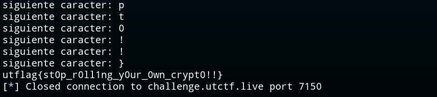

Espathra (UTCTF)
El codigo que se proporciona para este reto es el siguiente:
#!/usr/bin/env python3
from Crypto.Cipher import AES
from Crypto.Util.Padding import pad
key = open("/src/key", "rb").read()
secret = open("src/flag", "r").read()
cipher = AES.new(key, AES.MODE_ECB)
while 1:
print('Enter text to be encrypted: ', end='')
x = input()
chksum = sum(ord(c) for c in x) % (len(x)+1)
pt = x[:chksum] + secret + x[chksum:]
ct = cipher.encrypt(pad(pt.encode('utf-8'), AES.block_size))
print(hex(int.from_bytes(ct, byteorder='big')))
Análisis
El código recibe un input y calcula un checksum basado en la longitud de nuestro input, suma los valores de cada caracter del string introducido y calcula el checksum modulo "len(input)+1". Despues "inyecta" la flag a partir de la posicion "checksum" de nuestro string y cifra este texto con AES ECB.

A simple vista parece un reto de Chosen Plaintext Attack en AES, mas espeficamente el típico Byte-at-a-Time ECB Decryption Attack pero con la condición de que el checksum nos dificultará asignar la posición correcta al byte que vamos a desencriptar. Tenemos tambien un oráculo que nos devuelve todo el texto que le pasemos cifrado. Se usan bloques de 16 bytes, cosa que tambien tenemos que tener en cuenta en la solución.
Ahora la pregunta es, ¿Cómo jugamos con el checksum para que el último byte del bloque coincida con el primer byte de la flag?. En el Byte at a Time mas sencillo bastaria con 15*"A" pero aqui entra en juego el checksum. Vamos a partir con que conocemos el formato de la flag "utflag{}", tendríamos los 7 primeros caracteres y para sacar el octavo segun la teoría del ataque el payload para poner el caracter 8 de ultimo sería 8*"A". Esto nos daria un checksum de 7, asi que lo que se cifrará será "AAAAAAA{FLAG}A" asignandole el caracter 9 a la ultima posición esta vez.
solución
Lo primero será hacer una función que nos ajuste el checksum, primero asignando el offset necesario y despues añadiendo un valor que nos coloque la flag donde nos interesa.
def calcChecksum(x):
chksum = sum(ord(c) for c in x) % (len(x) + 1)
return chksum
def ajustarChecksum(posCheck, payload):
for c in range(65, 90):
if calcChecksum(payload + chr(c)) == posCheck:
return chr(c)
Siguiendo con el ejemplo anterior, "posCheck" seria el 8, es decir, queremos que a partir del caracter 8 empiece nuestra flag. La función para este ejemplo devuelve la letra "D", esto quiere decir que aunque enviemos "AAAAAAAAD" el resultado será "AAAAAAAA{FLAG}D"
Con este ajuste ya podemos hacer el ataque de forma normal, en primer lugar recogemos el texto cifrado del payload "AAAAAAAAD" donde el ultimo byte es el caracter número 8 y bruteforceamos el caracter enviando "AAAAAAAA"+"candidato"+"ajustarChecksum"
#CT1
posCheck = 15 - len(FLAG)
payload1 = 'A' * posCheck
payload1 += ajustarChecksum(posCheck, payload1)
p.sendlineafter(b'encrypted: ', payload1.encode('utf-8'))
ct1_hex = p.recvline()[2:].decode().strip()
#CT2
payload2 = 'A' * posCheck + FLAG
for candidate in string.printable:
payload2 += candidate
p.sendlineafter(b'encrypted: ', payload2.encode('utf-8'))
ct2_hex = p.recvline()[2:].decode().strip()
#Comprobamos
block_ref = safe_fromhex(ct1_hex)[:final]
block_candidate = safe_fromhex(ct2_hex)[:final]
if block_candidate == block_ref:
print(f'siguiente caracter: {candidate}')
FLAG += candidate
break
Por último, debemos ajustar los ultimos detalles, se puede dar el caso en el que cuando vamos a recuperar el CT2, debamos alejar el checksum para que la flag esté en la posicionon necesaria, de forma parecia a "ajustarChecksum". debemos tener en cuenta el posible error de que si el hexadecimal empieza por "0" no se printeara. Y deberemos ajustar el código para que trate tanto con el primer, segundo y tercer bloque del cifrado. El código final seria el siguiente:
from pwn import *
#p = process("main.py")
p = remote("HOST", PORT)
FLAG = ''
def calcChecksum(x):
chksum = sum(ord(c) for c in x) % (len(x) + 1)
return chksum
def ajustarChecksum(posCheck, payload):
for c in range(65, 90):
if calcChecksum(payload + chr(c)) == posCheck:
return chr(c)
def alejarChecksum(final, payload):
for c in range(65, 122):
if calcChecksum(payload + chr(c)) > final:
return chr(c)
def safe_fromhex(hs):
# Si la cadena tiene longitud impar, se añade un '0' al inicio.
if len(hs) % 2 != 0:
hs = "0" + hs
return bytes.fromhex(hs)
def decryptBlock(origen,final):
global FLAG
for _ in range(16):
if "}" in FLAG:
break
posCheck = (final-1) - len(FLAG)
payload1 = ''
payload1 += 'A' * posCheck
payload1 += ajustarChecksum(posCheck, payload1)
#enviar payload
p.sendlineafter(b'encrypted: ', payload1.encode('utf-8'))
ct1_hex = p.recvline()[2:].decode().strip()
#recoger ct
payload2 = ''
payload2 += 'A' * posCheck
payload2 += FLAG
aux = payload2
for candidate in string.printable:
payload2 += candidate
payload2 += alejarChecksum(final, payload2)
#enviar payload
p.sendlineafter(b'encrypted: ', payload2.encode('utf-8'))
#recoger ct
ct2_hex = p.recvline()[2:].decode().strip()
try:
block_ref = safe_fromhex(ct1_hex)[:final]
block_candidate = safe_fromhex(ct2_hex)[:final]
#comprobar
if block_candidate == block_ref:
print(f'siguiente caracter: {candidate}')
FLAG += candidate
break
except:
payload2 = aux
continue
#volver a intentar
payload2 = aux
decryptBlock(0,16)
print(FLAG)
decryptBlock(16,32)
print(FLAG)
decryptBlock(32,48)
print(FLAG)
La salida esperada es que vaya letra a letra hasta conseguir la Flag completa de la siguiente manera:
